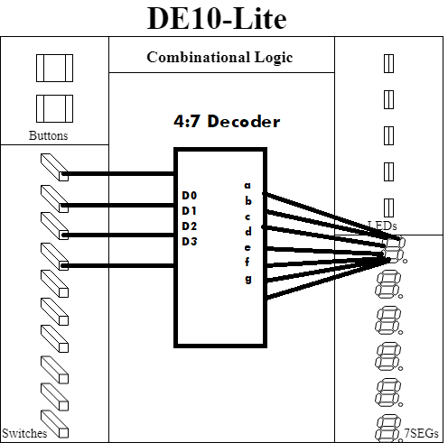
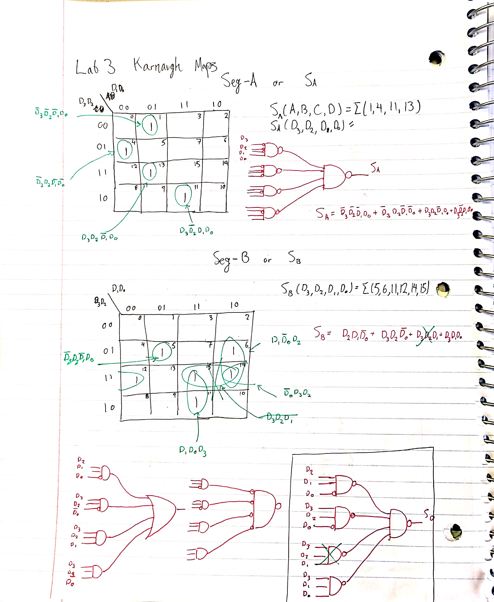
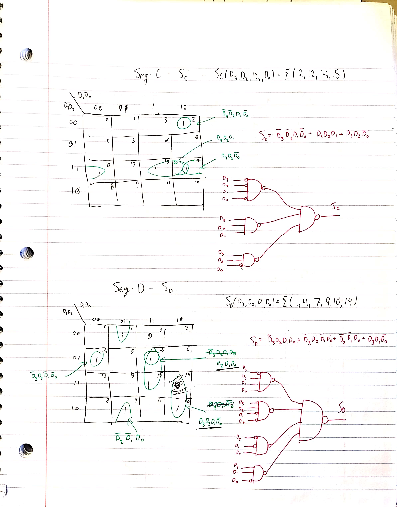
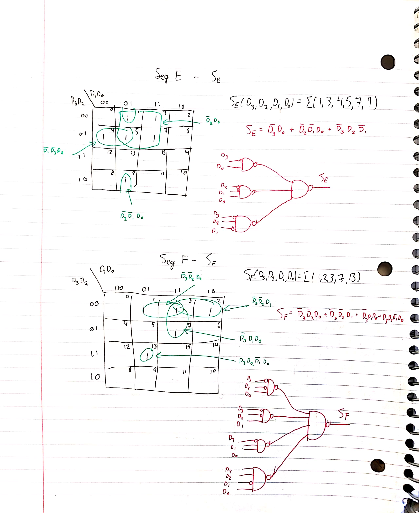
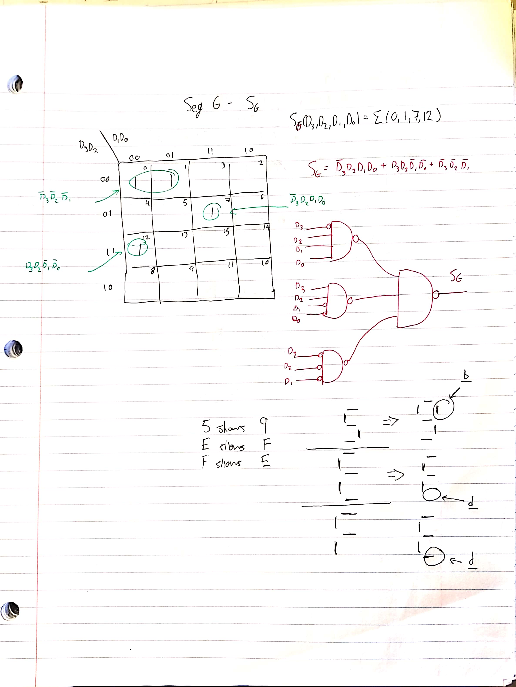
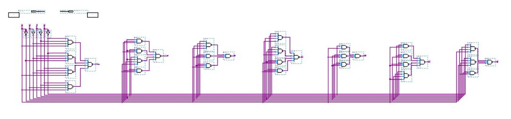
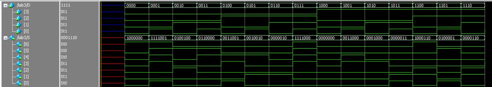
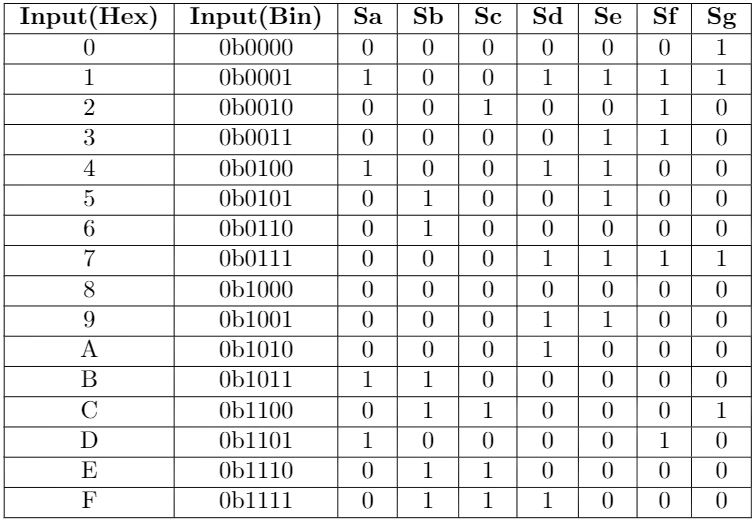
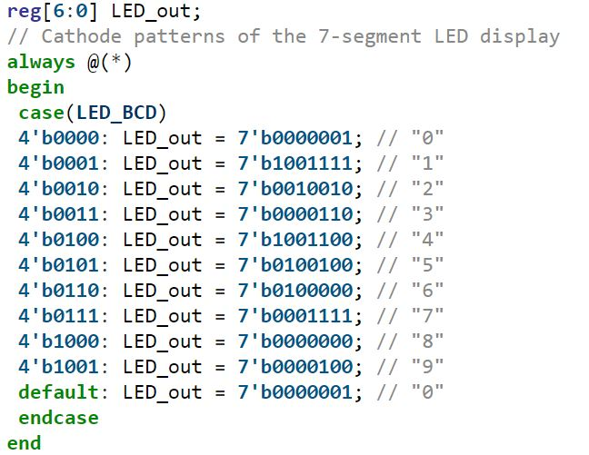

The purpose of this project was to use the basics of digital logic design using combinational building blocks to make a seven-segment display driver or a 4:7 Decoder block. The 4:7 (7-Segment) Decoder/Driver is meant to be implemented on the Terasic DE-10 MAX FPGA (https://www.terasic.com.tw/cgi-bin/page/archive.pl?Language=English&No=1021). The decoder has 4 inputs on each of the switches that correspond to a binary number. The binary number is represented in hexadecimal on the seven-segment display on the FPGA board. The seven segments require 7 outputs from the decoder in order to drive it. Seven-Segment drivers, of course, help control seven segment displays with a simplified input to get the segment to display a number or letter. Most all seven-segment displays that are used in consumer products will have a decoder/driver paired with them to lower the risk of glitches and malfunction (showing non-alphanumerical items on the display).
The block diagram consists of the 4:7 decoder between the binary switch inputs and the seven-segment output. The inputs were labeled as digital values each with a number the corresponds to the most and least significant bits; D3 is the most significant, D0 is the least significant. The outputs were labeled based on the pin of the seven-segment they were meant to attach to. For example the a output is meant to be connected to the seven-segments A pin (which is the top-most segment of the display). When the decoder is functioning, the schematic will be complied into a single part so it may be used in future projects. The schematic of a single segment's logic and the corresponding Karnaugh Maps are listed below.
   Once all of the K-Maps were made, they were translated into the Block Diagram Editor in Quartus (program used to synthesize onto DE-10). The correct output was confirmed in ModelSim 10.5b then synthesized to the DE-10. Here's the full schematic, ModelSim, and Truth Table.
  
Here's the working implementation on the DE-10 board.
Now after all of that effort of making K-Maps and afterwards troubleshooting them,
here’s the SystemVerilog code for making a Seven-Segment Display Driver. This is one
of many reasons why Hardware Description Languages like SystemVerilog and VHDL are used in industry…
